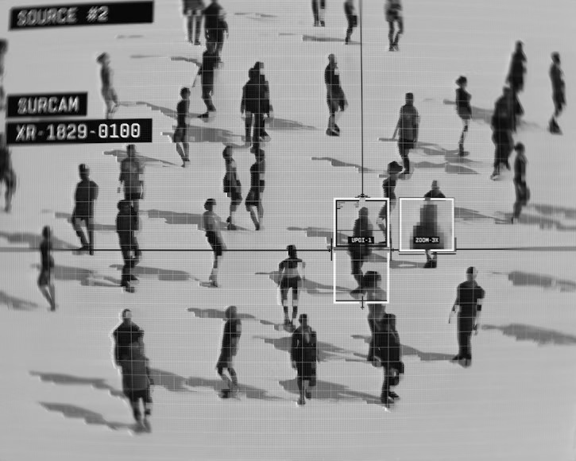

Watching as Control: CCTV & Public Monitoring
While CCTV cameras were initially introduced to be a preventative precaution for public safety, modern surveillance systems and cameras have evolved to monitor movement and behavior in public and private spaces. As a result, they have also influenced how people act when they know they are being watched. This creates a form of visual control where behavior can be shaped and altered through constant observation.
Seeing with Bias: Facial Recognition & Inequality
Facial recognition is a form of technology that relies on datasets that often reflect cultural or systemic biases. In instances where these systems misidentify individuals or perform unequally across varying groups, they reinforce existing inequalities. This raises questions about who is truly “seen” accurately and who is misrepresented by an automated vision.
- Algorithms learn from datasets that typically reflect existing social biases, indicating our own perception multiplies and amplifies in varying disciplines/scenarios.
- Reliability of this technology is in question as its accuracy can differ across varying groups of people.
- Highlights the limits of automated “objectivity” seen from digital vision systems.

Representation & Consent: Who Controls the Image?
Since surveillance imagery is rarely created with a given subject’s consent, this provides institutions that control the cameras a notable amount of power. As a result, this raises issues of privacy, visibility, and how people are portrayed without their voluntary participation. In a growing society where images and visuals shape perception, surveillance challenges the balance between safety and personal autonomy.
- Institutions also decide how footage is stored, interpreted, and used.
- Raises concerns around privacy, autonomy, and rights towards documenting others nwithout consent.